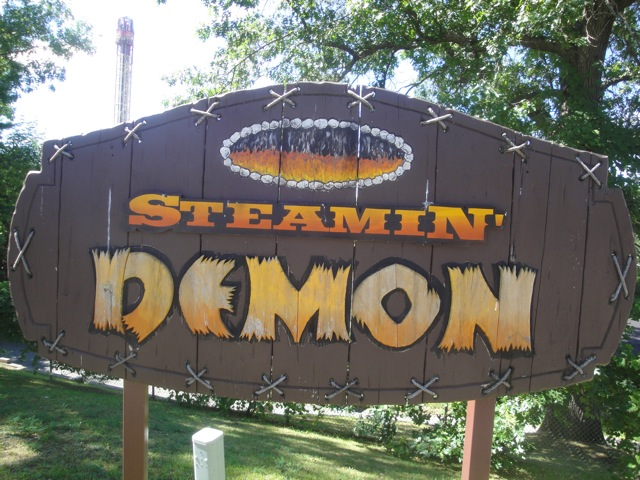
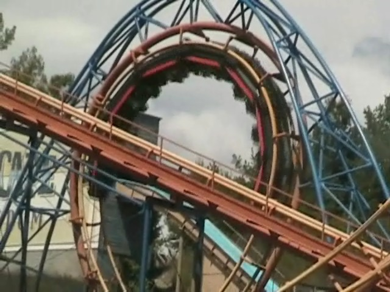

| |
Steamin Demon Review

We're here at the Great Escape. Today's ride we'll be reviewing for you is Steamin Demon. Once you get in the cars and pull down the OTSRs, you're off. You roll down a dip and around a big slow turn that goes under the exit where people will be waving good bye to you (What is it with Great Escape and big slow turns before the lifthill?). You try to wave good bye. Preparing for the worst. You think that this ride is going to suck. You then climb the lifthill. From the lifthill, you get a lovely view of Steamin Demon's inversions, the Great Wolf Lodge, and the 90 Freeway. Then after climbing the lifthill, you dip and go through another turn. And then, you go down the first drop. It's not that fun or fast, and to make things worse, it's starting to hurt. Up next, the Vertical loop. Not that forceful, but it's sure rough as hell. You start to wonder how the hell a simple vertical loop can hurt your head so much, but before you can do that, you dip up and go through another turn. You then SMACK through this turn, giving a nasty blow to your head, making us scream OUCH!!!!!! Then you roll through two corkscrews. They wern't bad. No, no no. They were HORRIBLE!!!!!! HORRIBLE AWFUL PAINFUL PEICES OF SH*T THAT MAKES US CRY WITH PAIN!!!!! OUCH!!!!!!!!! You then smack your heads in a turn and slide the brake run. THIS RIDE IS AWFUL!!!! AND I MEAN AWFUL!!!!! STEAMIN DEMON IS A STEAMING PILE OF SH*T HAUNTED BY DEMONS!!!! STAY AWAY!!!!! IT'S NOT WORTH IT!!!!!!!!!!
1/10
Location: Great Escape
Opened at Pontchartrain Beach in 1978
Moved to the Great Escape in 1984
Built by: Arrow
Last Ridden: August 3, 2011
Steamin Demon Photos





|